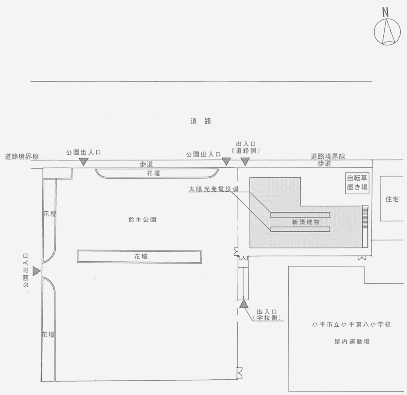
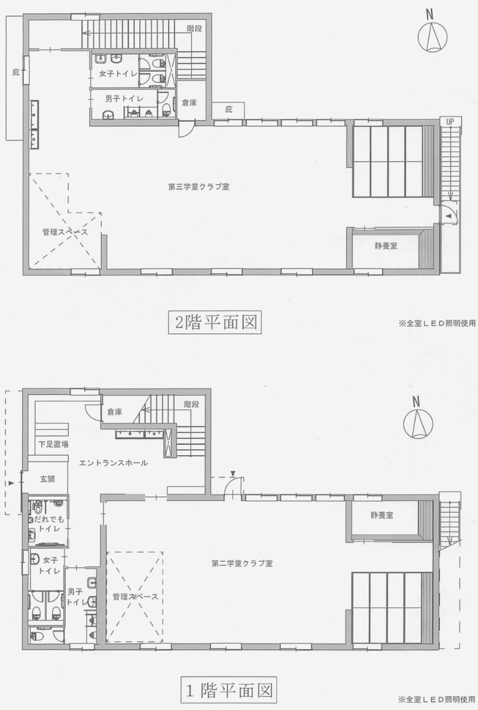
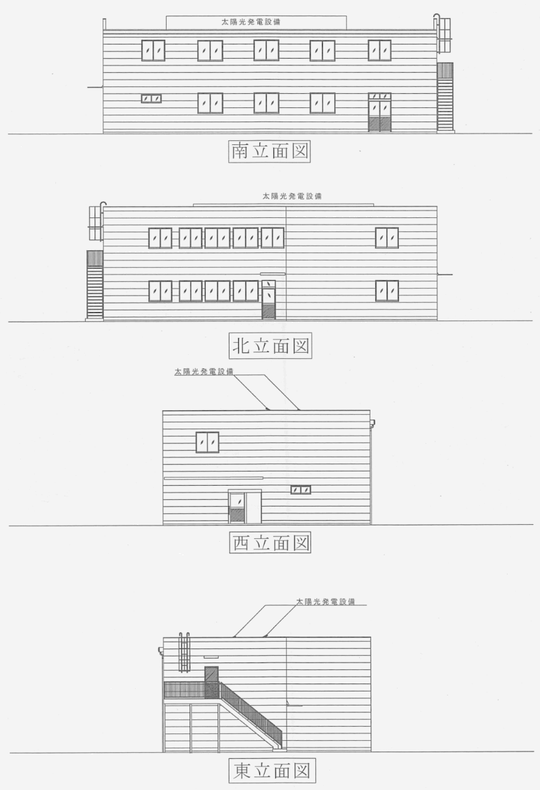

議案第42号 小平市八小学童クラブ第二・第三新築工事請負契約の締結について
厚生委員会付託
概要
小平市立八小学童クラブ第二。第三の新築工事実施に伴う工事請負契約を締結する必要から、提案するものです｡本工事の入札につきましては､入札方式を条件付一般競争入札方式により行い、その結果東海リース株式会社東京支店が、消費税込みで1億3千662万円で落札し、3月17日に仮契約を締結したものです。工事内容といたしましては、軽量鉄骨造、2階建て、建築面積226.57平方メートル、延べ床面積435.16平方メートルの建物を建築する工事です。なお、本建築工事に伴う付帯設備工事についても、本工事での施工となります。
解説
 議案41号に引き続き、八小クラブの第二、第三新築工事に伴う工事請負契約を締結するための議案です。入札の結果、東海リース（株）が1億3千662万円で落札し、仮契約を行っています。金額が大きいためこれもしっかり見ていく必要があります。
議案41号に引き続き、八小クラブの第二、第三新築工事に伴う工事請負契約を締結するための議案です。入札の結果、東海リース（株）が1億3千662万円で落札し、仮契約を行っています。金額が大きいためこれもしっかり見ていく必要があります。
- 契約の目的：小平市立八小学童クラブ第二・第三新築工事
- 契約の方法：条件付一般競争入札による契約
- 契約の金額：1億3,662万円（消費税込み）
- 契約の相手方：東海リース株式会社 東京支店 東京都港区虎ノ門5丁目1番5号 支店長 西江 計二
- 施行場所：小平市鈴木町1-400-7
- 工期：契約発効日の翌日から令和3年3月1日まで
- 工事内容：軽量鉄骨造 2階建て 建築面積（226.57㎡）、延べ床面積（435.16㎡）
- 予算科目：一般会計 （款）民生費（項）児童福祉費（目）学童クラブ費（節）工事請負費
- 耐震性：一般建物の1.25倍
入札参加者及び入札価格
| 入札参加者 | 入札価格（消費税込） | 落札額との差 |
| 東海リース株式会社東京支店 | 1億2,420万円（1億3,662万円） | |
| 株式会社システムハウスアールアンドシー | 1億2,900万円 | + 4% |
| 大和リース株式会社東京本店 | 1億4,650万円 | + 17% |
| 立川ハウスエ業株式会社多摩営業所 | 1億5,390万円 | + 20% |
| 株式会社内藤ハウス八王子営業所辞退 | 辞退 | ー |
以下は配布資料より引用



主な質疑
【注】 以下は要約ですので、正確な質疑内容は会議録をご参照ください。分かりやすくするため、括弧書きの部分は、実際の質問内容にかなり修正を加えたところもあります。また、簡略化のため、理事者側（市役所側）の答弁から敬語表現を省いている場合があります。実際は理事者側のすべての答弁において、市民に対する敬語表現で回答がなされています。
私（安竹）の質問＝、意見＝
一人会派の会 その他議員の質問＝、意見＝
その他 議員の質問＝：、意見＝
＠ 6月2日 本会議
| 工事にあたって、保護者や周辺住民への説明会はあったか。 |
説明会は昨年12月に2回実施。意見としては、安全面、公園利用者の安全対策、騒音への配慮。万全の措置をすると回答。 （伊藤 子ども家庭部長）
| 耐用年数は。 |
耐用年数は40年（軽量鉄骨造のため）。（首藤 都市建設担当部長）
＠ 6月11日 厚生委員会
| 落札した東海リースの実績は。 |
平成26年に、小平第十二小学校給食室の改築工事を請け負っている。また、小平市においてプレハブ工事はこれまで8件あり、そのうちうち1件を請け負っている。ただし学童クラブのプレハブ工事ではない。（細谷 契約検査課長）
| （株）内藤ハウスが辞退した理由は。 |
人員不足と聞いている。（細谷）
| 太陽光発電はどれくらい、何を賄える量か。 |
発電量は月間430kW予定、学童クラブで使用する電力の一部を賄う。蓄電はできない。（石川 施設整備課長）
| GIGAスクール構想が進捗するが、インターネット関連の設備は入るか。Wifiも入るか。それらのコストは国や都から補助されるか。（安竹 洋平） |
空配管といって、線を通す管の部分だけを工事で設置する。実際のケーブルや引き込みについては指定管理者の負担で入れてもらう。使用料も指定管理者が払うことになる。そういった費用が、指定管理料という形で我々に返ってくるので、最終的には市の負担になるが、これに対して国や都の補助がある。インターネットを使ったから幾らという形ではなく、運営費全体に対して幾らという形で補助される。（石野 子育て支援課長）
| 太陽光発電については基本的にペイするものではないと考えるが正しいか。教育的な意図があるものと思うが、設置コストとランニングコストは。（安竹 洋平） |
売電の費用は高額ではないのでペイすることはない。建物をたてる際、非常に高い割合で国や都から補助金をもらって建てており、小平市の持ち出しはほぼないような形で、例年学童クラブの建設はできている。売電ではペイしないが、補助金の方で十分に見返りが来ていると考えている。ランニングコストとしては、パワーコンディショナー（変換器）が時々壊れるため修繕をする可能性があるがそれも10年に1度くらいのため、すぐに定型的な費用がかかるということではない。（石野）
太陽光（発電設置）の価格は、おおむね400万円程度。（桃井 施設整備課長補佐）
| 太陽光発電（設置）については結局、市からの持ち出しはほぼゼロと考えて良いのか。（安竹 洋平） |
一般財源の負担はほぼない形となっている。（石野）
| 小平市の入札等監視委員会の令和元年度第1回の要旨を確認すると、委員の方からの意見で、「東京都の設計委託積算シートではなく、小平市独自のものができるか調査をした方がよい」と書いてある。これは落札金額の差異が大きかったことからの意見と思うがどういうことか。（安竹 洋平） |
① 積算額と落札額については、積み上げて積算するものについては、通常東京都建設局の基準に基づいて関さんしている。しかし今回は、プレハブメーカーによる見積もりを基に算出している。実際その落札が予定価格に下がったというものは、競争原理が働いて落札率が下がったということで、今までの実績でいくと大体70%から80%程度の落札率で下がるという実績。その時の状況によって落札は変わるので、機構段階で予定価格は適正だったと考えている。（桃井）
② （入札等監視委員の意見は）設計業務委託についての落札価格が低かったということがあり、そのときには東京都の積算を使うのではなく、独自の形のもので積算した方が、実際の落札率と予定価格の差が縮まるのではないか、予定価格の適正な算出という形では、独自のものを検討してはどうか、というご指摘だった。（細谷）
| ②に関して、市としてはどう受け止めているか。（安竹 洋平） |
今回はメーカーの価格を採用した。通常、東京都財務局の単価資料を使っているが、その時々により、他の工事でもそうだが、予定価格に対して落札価格が相当開きのあるものも出ている。そういった意味では、その時々に応じて適正と思われる、小平独自のような資料を使用していくことが、小平独自の考え方になるのかなと思っている。（石川）
| 入札価格で、（株）東海リース1億2,420万円に対して、立川ハウス工業（株）が1億5,390円と、落札価格に対して25%の開きがある。この要因は。 |
今回は条件付き一般競争入札で、まず入札者の資格を満たしている事業者が参加している。その中で、一番価格の低いものが落札できるという形であり、適正な価格競争の結果、そういう金額が出たものと捉えている。（細谷）
| 附帯工事も併せて任せることになった理由は。附帯工事は市内業者でやれなかったのか。 |
今回、施設の使用開始時期が定められており、工期も短いという中で、各設備も含めて効率よく施工を進める必要があったため、一括発注した。（石川）
今回は一括発注だが、一千万円以上の付帯設備工事については、基本的には分離発注を行っている。分離発注の際は、市内事業者優先になる。（細谷）
| 市内で施工できる業者はないのか。 |
今回の工事は軽量鉄骨のプレハブ工事。入札資格を満たす事業者は国内で5社のみ。5社すべてが参加し、1社が辞退。市内事業者は今回の工事については参加できない状況。（細谷）
＠ 6月18日,22日 平場にて
| 予定価格はどのように設定したか。 |
プレハブ工法は特殊で、工場で部品を作り、現地で組立を行う。現場で一から作り上げていくものとは違い、東京都の方からは、積算での見積もり方法が提示されていない。プレハブ工法が行える会社は全国で26社あるが、そのうち今回の入札参加要件を満たしているのは5社のみ。
見積もりは、入札のあった5社のうち3社に依頼した。落札した東海リースの見積りはなかったと思う。工法によっては、見積りを出してきた会社が落札するような事態もありうる。プレハブ工法だけではなく、エレベーターもメーカーが少ないため同様な状況になる可能性がある。価格の妥当性については、3社の見積りを取った。市の方でも、価格の妥当性を知りたいため、独自に見積りを作成して比較した。なお、予定価格は186,439,000円。
 プレハブ工法は全国でも限られた会社しかできないとのこと、見積りもそれらの会社に依頼しなければならないことから「見積りを出した会社が落札する」ような状況が考えられます。言いなりの価格で決まってしまう危険性があり、慎重にならなければいけないと思います。
プレハブ工法は全国でも限られた会社しかできないとのこと、見積りもそれらの会社に依頼しなければならないことから「見積りを出した会社が落札する」ような状況が考えられます。言いなりの価格で決まってしまう危険性があり、慎重にならなければいけないと思います。
私は素人なので価格の妥当性は良く分かりませんが、落札価格1億2,420万円、見積りを出していない会社が予定価格の67%で落札しており、「競争原理は働いている」と言われたら、そうかなと思ってしまいます。工事現場で事務所として使われるようなプレハブと比較すると随分高いなと感じてしまいますが・・・。